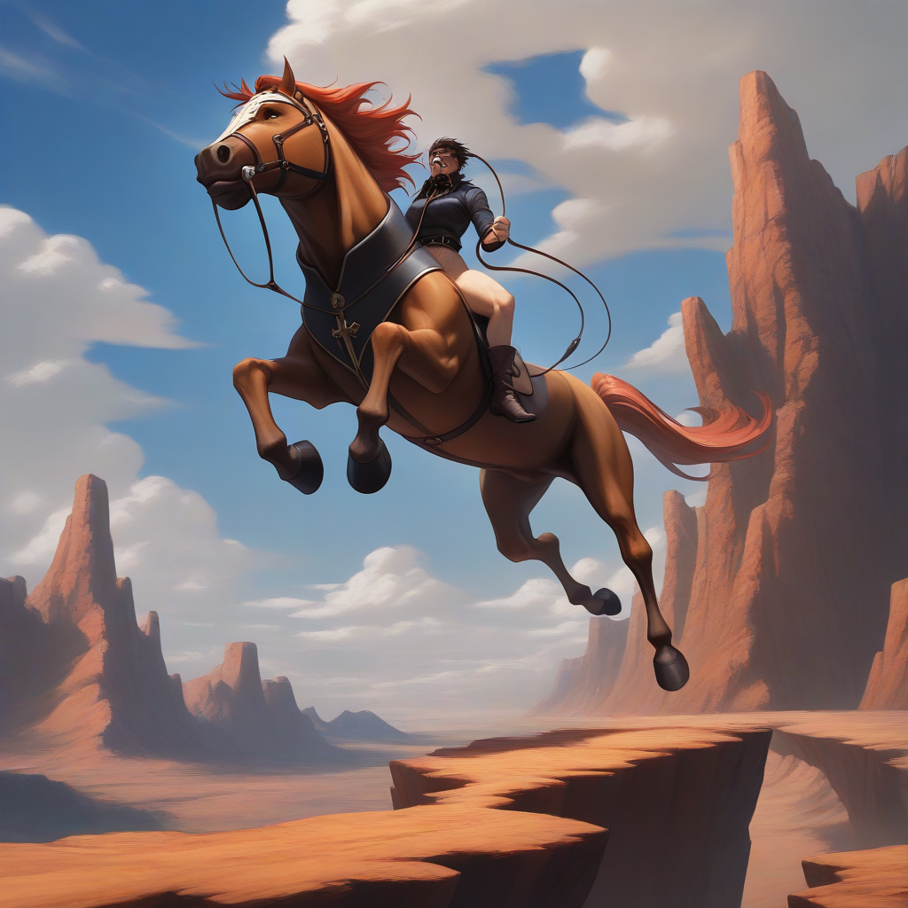

悬崖勒马 (xuán yá lè mǎ)
- 描述：一匹骏马正站在悬崖边缘，马蹄紧贴着悬崖的边缘，仿佛随时可能坠落。
- 描述：马的表情紧张，眼睛注视着前方，似乎意识到了危险。
- 描述：马的鬃毛随风飘动，显示出马的不安和紧张。
- 描述：在马的身后，是一位骑手，他正用力拉紧缰绳，试图控制马匹，避免坠入悬崖。
- 描述：骑手的表情专注而坚定，显示出他对局势的掌控和对危险的警觉。
- 描述：悬崖下方是深不见底的峡谷，云雾缭绕，给人一种深不可测的感觉。
- 描述：整个画面背景是险峻的山崖和陡峭的峭壁，强调了“悬崖勒马”的紧迫感和警示意味。

通过文生图生成器，根据上述描述生成了这幅成语“悬崖勒马”的画面。